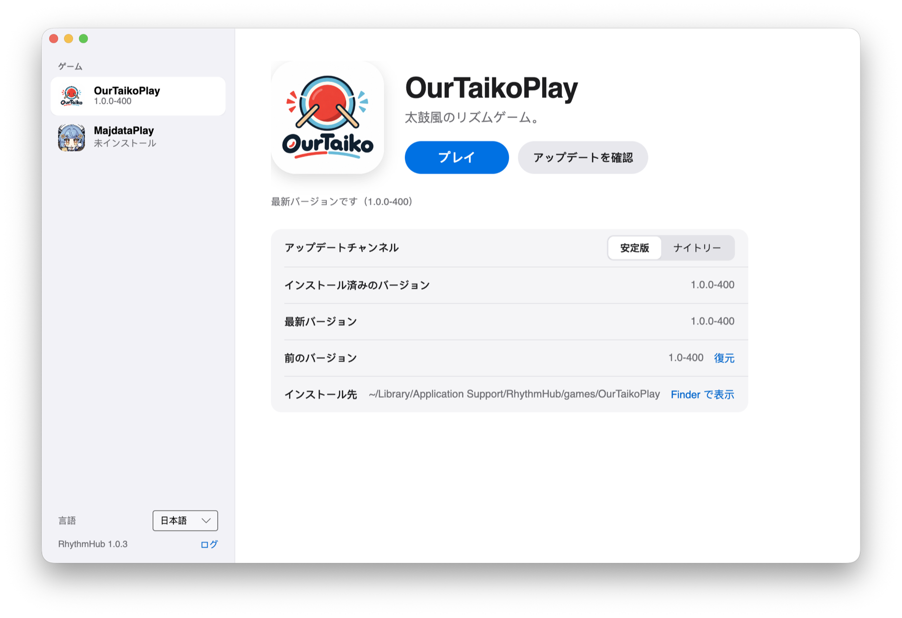
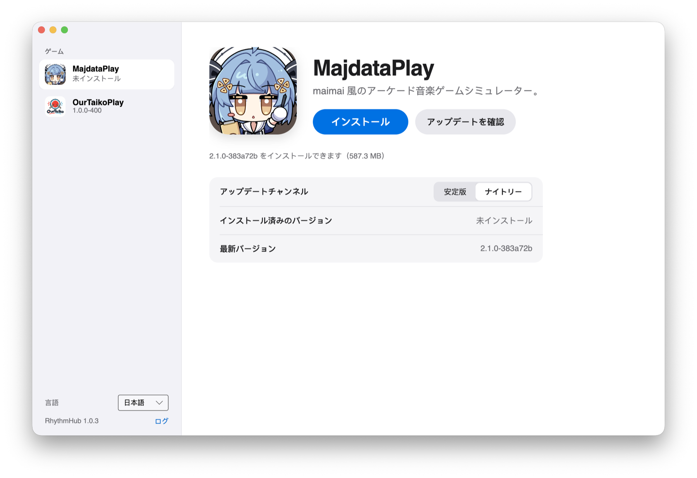
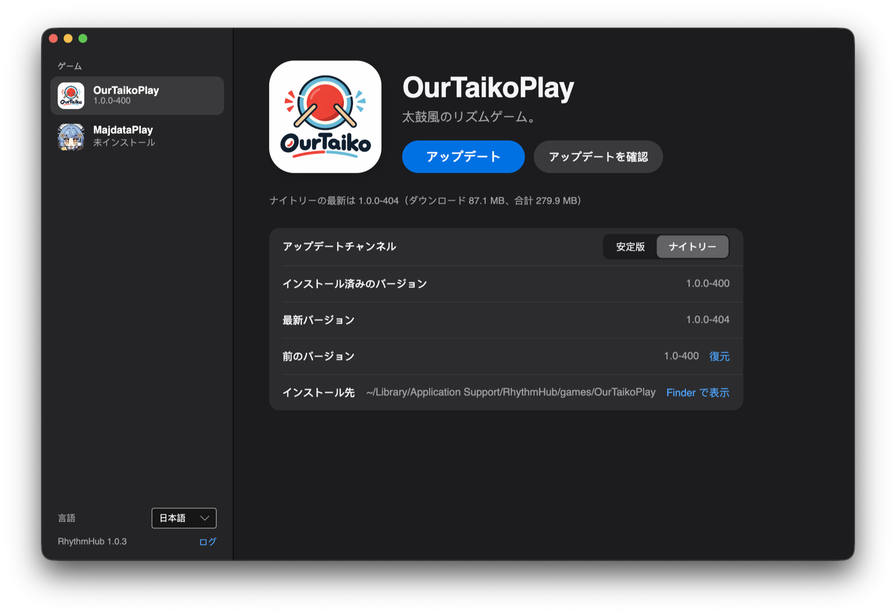

機能
差分アップデート
変更されたファイルだけをダウンロードし、残りはそのまま再利用します。
レジューム
ダウンロードは一時停止でき、中断しても途中から再開します。
署名検証
リリースのマニフェストは署名済みで、各ファイルのハッシュをインストール前に検証します。
ロールバック
新しいバージョンに問題があれば、再ダウンロードなしで前のバージョンに戻せます。
アップデートチャンネル
ゲームごとに安定版かナイトリーを選べます。
自動アップデート
ランチャー自身の更新をバックグラウンドでダウンロードし、再起動時に適用します。
ゲーム

MajdataPlay
maimai 風のアーケード音楽ゲームシミュレーター。

OurTaikoPlay
太鼓風のリズムゲーム。


ダウンロード
インストール後は自動でアップデートされます。
CDN
上のボタンのダウンロード先です。常に最新版を指します：
https://distrib.sparkbarry.com/RhythmHub/MacOS/RhythmHub-osx-Setup.pkg
https://distrib.sparkbarry.com/RhythmHub/Windows/RhythmHub-win-Setup.exe
初回起動
インストーラはまだ署名されていないため、初回起動はシステムにブロックされます。各コンピュータで一度だけ許可してください：
- macOS：一度開いたあと、「システム設定 → プライバシーとセキュリティ」で「このまま開く」をクリックします。
- Windows：SmartScreen の画面で「詳細情報 → 実行」をクリックします。